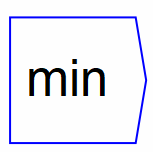
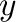

Next: max
Up: Binary Operations
Previous: divide
Contents

Returns the minimum of  and
and

. If multiple
wires are connected to the ports, the the overall minimum from all
inputs is returned.
The operator can be placed on the canvas in two ways:
- From the Binary Operations (``binop'') toolbar; or
- By typing the letters ``min'' on the canvas and then pressing the
Enter key.